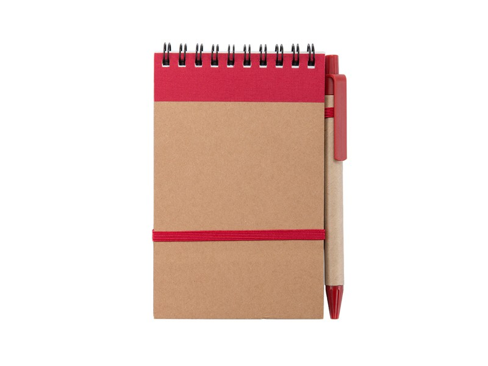

<mat-toolbar color="primary">
  <span>Notes</span>
</mat-toolbar>

<div class="container">
  <form (submit)="onSubmit(prompt.value)">
    

    <mat-form-field fontSize="25">
      <mat-label>Notes</mat-label>
      <textarea matInput
                  cdkTextareaAutosize
                  #autosize="cdkTextareaAutosize"
                  cdkAutosizeMinRows="1"
                  cdkAutosizeMaxRows="90"></textarea>
      </mat-form-field>
  </form>

  <div *ngIf="response">
    <h2>Response:</h2>
    <p>{{ response.choices[0].text }}</p>
  </div>
</div>

<style>
  .container {
    margin:  20px;
    padding:  20px;
    border:  1px solid #ccc;
    border-radius:  4px;
  }
</style>


<mat-toolbar color="primary">
  <span>GPT4</span>
</mat-toolbar>

<div class="container">
  <form (submit)="onSubmit(prompt.value)">
    <mat-form-field appearance="outline">
      <mat-label>Prompt</mat-label>
      <input matInput #prompt type="text" name="prompt">
    </mat-form-field>
    <button mat-raised-button color="primary" type="submit">Submit</button>
  </form>

  <div *ngIf="response">
    <h2>Response:</h2>
    <p>{{ response.choices[0].text }}</p>
  </div>
</div>

<style>
  .container {
    margin:  20px;
    padding:  20px;
    border:  1px solid #ccc;
    border-radius:  4px;
  }
</style>
